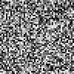
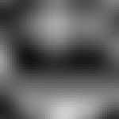
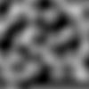
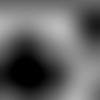
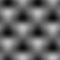
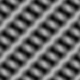
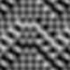

Description
Perlin noise is a random sequence generator that is more naturally ordered than the standard random() command. It was invented by Ken Perlin in the 1980s and been used since in graphical applications to produce procedural textures, natural motion, shapes, terrains, clouds, etc.
|  | Here’s some true random noise in which each square’s color is an arbitrary value between 0.0 and 1.0. Sometimes the output of a true random number generator is too harsh to appear natural. |
|  | Perlin noise is smoother because each value depends on the values around it, yielding smooth transitions. Furthermore, the random ‘landscape’ stretches indefinitely. |
Download
| noise.zip (5KB) Last updated for NodeBox 1.9.2 Licensed under GPL Author: Malcolm Kesson (C-code), Tom De Smedt (Python adaption) |
Documentation
How to get the library up and running
Put the noise library folder in the same folder as your script so PlotDevice can find the library. You can also put it in ~/Library/Application Support/PlotDevice/.
noise = ximport("noise")
Generating noise
The generate() command returns smooth values between 0.0 and 1.0 based on the parameters you supply. You can render noise in one (x), two (x, y) or three dimensions (x, y, z).
generate(x, y=0.0, z=0.0)
The x, y and z parameters determine the coordinates in the noise landscape. Since the landscape is infinite, the actual value of a coordinate doesn’t matter, only the distance between successive steps. The smaller the difference between steps, the smoother the noise sequence. Steps between 0.005 and 0.1 usually work best.
|  |
for i in range(100):
for j in range(100):
d = noise.generate(i*0.05, j*0.05)
fill(0, 0, 0, d*1.2)
rect(i, j, 1, 1)
|
The generate() command has additional width, height, depth and scale parameters that might make things more comprehensible for you. Instead of multiplying x , y and z with a scale, you can define their range with width, height and depth and then zoom in or out with the scale parameter:
|  |
w, h = 100, 100
for i in range(w):
for j in range(h):
d = noise.generate(
i, j,
width=w,
height=h,
scale=0.5
)
rect(i, j, 1, 1, fill=(0,0,0,d*1.2))
|
By default, the Noise library will load a ‘shape’ from which to generate the noise. It will use the same pattern each time you run your script. If you want the library to create a new pattern each time you run the script you can call the seed() command before generating noise:
seed(i=None)
Shaping the noise pattern:
The shape itself is a list of 512 integers with values between 0-511. With the shape() command you can load a new list to generate noise from. This way you can create more specific patterns of noise to suit your own needs:
|  |
# honey comb noise.shape( [0,1]*256 ) |
|  |
# chainmail noise.shape( [0,1,2,3]*128 ) |
|  |
# some kind of metal or fabric? noise.shape( [0,1,2,3,random(6),3,2,1]*64 ) |